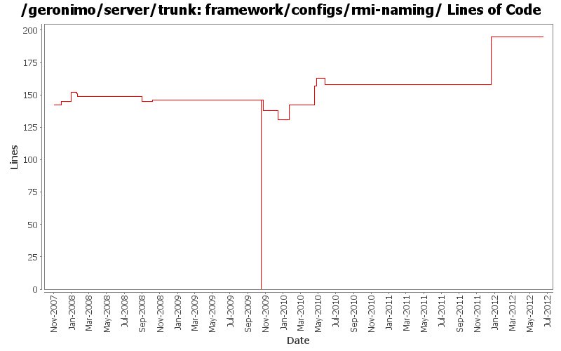

[root]/framework/configs/rmi-naming
 src
(0 files, 0 lines)
src
(0 files, 0 lines)
 main
(0 files, 0 lines)
main
(0 files, 0 lines)
 history
(0 files, 0 lines)
history
(0 files, 0 lines)
 plan
(1 files, 64 lines)
plan
(1 files, 64 lines)
 resources
(0 files, 0 lines)
resources
(0 files, 0 lines)
 OSGI-INF
(0 files, 0 lines)
OSGI-INF
(0 files, 0 lines)
 blueprint
(1 files, 87 lines)
blueprint
(1 files, 87 lines)

| Author | Changes | Lines of Code | Lines per Change |
|---|---|---|---|
| Totals | 36 (100.0%) | 308 (100.0%) | 8.5 |
| djencks | 17 (47.2%) | 259 (84.1%) | 15.2 |
| gawor | 6 (16.7%) | 28 (9.1%) | 4.6 |
| jdillon | 3 (8.3%) | 13 (4.2%) | 4.3 |
| rickmcguire | 2 (5.6%) | 2 (0.6%) | 1.0 |
| kevan | 4 (11.1%) | 2 (0.6%) | 0.5 |
| xiaming | 1 (2.8%) | 1 (0.3%) | 1.0 |
| rwonly | 1 (2.8%) | 1 (0.3%) | 1.0 |
| linsun | 1 (2.8%) | 1 (0.3%) | 1.0 |
| dblevins | 1 (2.8%) | 1 (0.3%) | 1.0 |
Update trunk version to 4.0.0-SNAPSHOT
1 lines of code changed in 1 file:
GERONIMO-6240 Port conflict with the RMIRegistry so disable it for now
4 lines of code changed in 1 file:
GERONIMO-6240 Make several base geronimo functions (kernel, deployer, etc) DS services and make the car-maven-plugin take advantage of that. Server assembly doesn't work yet, builds framework.
18 lines of code changed in 1 file:
GERONIMO-6240 various dependency changes such as removing sxc and reducing dependency on blueprint bundles
53 lines of code changed in 1 file:
GERONIMO-6240 try a feature for the base geronimo stuff, work on upgrading to osgi 4.3/karaf 3.0.0-SNAPSHOT
1 lines of code changed in 1 file:
GERONIMO-5987 use our fork of Aries blueprint 0.3 in ext, with the patch in ARIES 727
1 lines of code changed in 1 file:
[maven-release-plugin] prepare release 3.0-M2
1 lines of code changed in 1 file:
[maven-release-plugin] prepare branch 3.0-M2
1 lines of code changed in 1 file:
use latest components from aries project
1 lines of code changed in 1 file:
GERONIMO-5290 fix many of the deprecation warnings from maven 3
8 lines of code changed in 1 file:
Wait for blueprint container to be created before processing rest of the gbeans. Should get ridd of sporadic 'We could not find an ObjectFactory to use' errors at server startup
6 lines of code changed in 1 file:
install & start aries jmx bundles in rmi-naming plugin
15 lines of code changed in 1 file:
GERONIMO-5041 Integration aries osgi jndi implementation
15 lines of code changed in 1 file:
remove some jee-specs references
0 lines of code changed in 1 file:
bunch of logging improvements
0 lines of code changed in 1 file:
GERONIMO-4916 step 2 move sandbox osgi framework into trunk
146 lines of code changed in 1 file:
GERONIMO-4916 step 1 remove old framwork
0 lines of code changed in 3 files:
GERONIMO-4655 upgrade version to 3.0-SNAPSHOT, make a few things more consistent
1 lines of code changed in 1 file:
GERONIMO-4488 Framework assembly can not be stopped successfully
1 lines of code changed in 1 file:
Use ServerHostname for the RMI (i.e. JNDI) host address
1 lines of code changed in 1 file:
GERONIMO-4239, sort of. Use transitive depenedencies in c-m-p everywhere. This may break stuff.... let me know
0 lines of code changed in 1 file:
Update LICENSE and NOTICE files. Merge from 2.1 branch
0 lines of code changed in 2 files:
upgrade trunk to 2.2-SNAPSHOT
1 lines of code changed in 1 file:
GERONIMO-1761 move geronimo-util to geronimo-crypto. Still pending mv of one test directory that svn wouldn't let me move
1 lines of code changed in 1 file:
(GERONIMO-3747) Fixed parentage of module groups, though most still need to have their modules put into the proper groupId
Updated groupId of *everything* under framework/** to org.apache.geronimo.framework, and did my best to update all references
11 lines of code changed in 1 file:
(GERONIMO-3771) Moved maven-plugins/* to buildsupport/*, updated groupId to org.apache.geronimo.buildsupport
2 lines of code changed in 1 file:
Drop relativePath
0 lines of code changed in 1 file:
GERONIMO-3732 steps 1, 2. Move plugin management and some jsr88 base code into a new module
5 lines of code changed in 1 file:
GERONIMO-3724 perhaps, make build work again by including deployer dependencies explicitly
1 lines of code changed in 1 file:
GERONIMO-3724 perhaps, make build work again by including deployer dependencies explicitly
7 lines of code changed in 1 file:
add an option for setting minimum thread pool size. also increase thread idle time to 30 secs. (GERONIMO-3634)
6 lines of code changed in 1 file:
Add missing portOffset substitution
0 lines of code changed in 2 files: